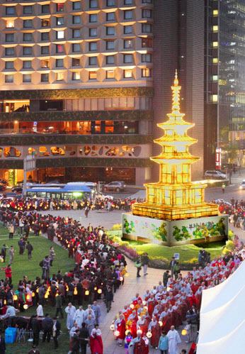
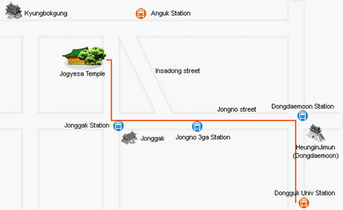

Lotus Lantern Festival

Period
05.18.2012 ~ 05.20.2012
Address
Seoul-si Jongno-gu Gyeonji-dong
Location
Bongeunsa Temple (Samseong-dong), Dongguk University, Jogyesa Temple area.
Telephone
1330 tt call center: +82-2-1330 (Korean, English, Japanese, Chinese)
For more info: +82-2-2011-1774~7
Introduction
Korea's annual Lotus Lantern Festival celebrates a millenia-old tradition in honor of Buddha's Birthday. The highlight of the month-long Lotus Lantern Festival is three activity-packed days on May 18-20. Activities will include hands-on experiential programs, performances, parades, and exhibitions. Most programs are family-oriented. On the night of May 19, more than one hundred thousand lotus lanterns will light up the Seoul night. The majestic parade of lanterns in unimaginable shapes and colors is an incredible sight to witness.
Programs
Exhibition of Traditional Lanterns
Meticulously crafted and exquisite lanterns made of hanji, traditional handmade Korean paper, will be on display. Each lantern tells its own story with its warm, cheerful light.
- Schedule: May 18-28;
- Venue: Bongeunsa Temple (Samseong Station, Subway Line 2).
Eoulim Madang (Buddhist Cheer Rally)
Lantern parade participants, arrayed in their traditional hanbok costumes, will rally together with laughter and dancing before the lotus lantern parade begins.
- Schedule: May 19 (Sat) / 16:30-18:00;
- Venue: Dongguk University Stadium.
Lantern Parade
Behold a brilliant ocean of light from the countless handheld lanterns and the grand ornate lantern floats in the festival's main attraction. Not to be missed.
- Schedule: May 19 (Sat) / 19:00-21:30;
- Venue: From Dongdaemun to Jogyesa Temple, along the Jongno Street.
Hoehyang Hanmadang (Post-Parade Celebration)
Following the parade, participants and spectators come together to end the festivities in a spirit of dedicating one's merits to others. Buddhist entertainers put on a show and the audience gets into the act, dancing hand in hand. Fondly called the ‘Flower Party’ by foreigners, it is a joyful night with flower petals raining from the sky.
- Schedule: May 19 (Sat) / 21:30-23:00;
- Venue: Jonggak Intersection (Jonggak Station, Subway Line 1).
Traditional Cultural Events
Visit the booths to make lotus lanterns, create Buddhist art, try temple food and play traditional Korean folk games. There are also booths introducing the Buddhist cultures of Tibet, Mongolia, and Southeast Asia.
- Schedule: May 20 (Sun) / 12:00-18:00;
- Venue: Street in front of Jogyesa Temple.
Cultural Performances
Traditional Korean folk performers and performers from Asian Buddhist communities will perform.
- Schedule: May 20 (Sun) / 12:00-18:00;
- Venue: Performance Stage in front of Jogyesa Temple.
Yeondeungnori (Final Celebration)
The grand finale of the festival features a mini lantern parade around Insa-dong, accompanied by the Lotus Lantern Performance Groups. A joyful conclusion to a festival full of energy and harmony!
- Schedule: May 20 (Sun) / 19:00-21:00;
- Venue: Insadong ~ Jogyesa Temple.
Transportation
Jogyesa Temple
1) Jonggak Station (Subway Line 1), Exit 2.
2) Anguk Station (Subway Line 3), Exit 6.
Bongeunsa Temple
Samseong Station (Subway Line 2), Exit 6.
Go straight 600m and turn left in front of COEX.
Continue 150m, until you see Bongeunsa Temple on the right.
Event Map

Fax
+82-2-725-6643
E-Mail
kang@buddhism.or.kr
Homepage
www.llf.or.kr (Korean, English, Chinese, Japanese)